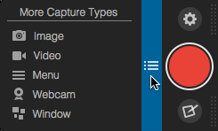

Capture window
Capture window
Use the Capture window to start an image capture, video capture, or to change the capture settings and preferences.
Use the Capture window to start an image capture, video capture, or to change the capture settings and preferences.
Move your cursor over the blue bar on the right side of the screen to expand the Capture window.

The Capture window can be docked anywhere along the left or ride sides of the screen. Click and drag the Capture window to change its docked locaton.
To start an image or video capture, click the red Capture button. See Capture an Image or Record a Video.

To start another type of capture, click the More Capture Types button and click a capture type from the list.
